在本技术报告中，我们介绍 Ring-linear 模型系列，具体包括 Ring-mini-linear-2.0 和 Ring-flash-linear-2.0。Ring-mini-linear-2.0 拥有 16B 参数，激活参数为 957M；Ring-flash-linear-2.0 拥有 104B 参数，激活参数为 6.1B。两款模型均采用混合架构，有效融合线性 attention 与 softmax attention，显著降低长上下文推理场景中的 I/O 和计算开销。相较于 320 亿参数的稠密模型，该系列将推理成本降至十分之一；相较原始 Ring 系列，成本也降低超过 50%。此外，通过系统探索混合架构中不同 attention 机制的比例，我们确定了当前最优的模型结构。同时，利用自主研发的高性能 FP8 算子库 linghe，整体训练效率提高了 50%。得益于训练引擎和推理引擎算子的高度对齐，这些模型在强化学习阶段能够实现长期、稳定、高效的优化，并在多个具有挑战性的复杂推理基准上持续保持 SOTA 性能。
日期：2025 年 10 月 22 日
Hugging Face：https://huggingface.co/inclusionAI/Ring-flash-linear-2.0
Hugging Face：https://huggingface.co/inclusionAI/Ring-mini-linear-2.0
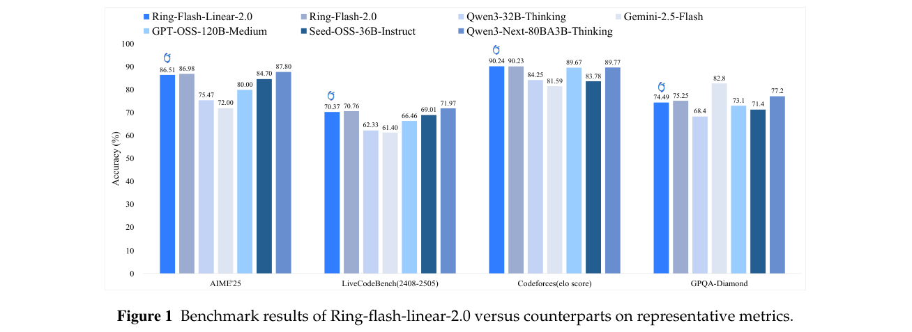
近年来，test-time scaling（Snell et al., 2024; Muennighoff et al., 2025）显著拓展了大语言模型（LLM）的能力边界。OpenAI O 系列1、DeepSeek R1（Guo et al., 2025）、Gemini 2.5（Comanici et al., 2025）和 Qwen（Yang et al., 2025）Thinking 系列等模型，通过增加 decoding token 数量提升了性能。推理模型的突破也促进了非推理任务的改进。同时，Agent 系统和代码生成等核心应用对长上下文支持的需求日益增加，使扩展上下文能力成为模型实际部署的关键要求。
伴随这些进展，出现了两项主要挑战：语言模型的训练长度和输出长度都必须大幅增加，导致总体资源消耗显著上升。在各种影响因素中，attention 机制是关键瓶颈。MHA（Vaswani et al., 2017）、GQA（Ainslie et al., 2023）、MQA（Shazeer et al., 2017）和 MLA（Liu et al., 2024a）等传统架构，资源开销随序列长度增加而快速增长，对 I/O 与计算带来相当大的压力。具体而言，传统 softmax attention 的计算复杂度随序列长度呈二次增长，而 I/O 开销随输出长度线性增长。这些约束严重阻碍模型扩展到更长的上下文。
为应对这些挑战，线性 attention 研究迅速发展。Retnet（Sun et al., 2023）、Lightning Attention（Qin et al., 2023）、Mamba（Gu and Dao, 2024）、Gated Linear Attention（Yang et al., 2023）和 DeltaNet（Yang et al., 2024）等方法相继提出，显著改善 I/O 与计算效率：计算复杂度从 \(O(n^2d)\) 降至 \(O(nd^2)\)，其中 \(n\) 为序列长度，\(d\) 为 attention head 维度，而状态内存的空间复杂度变为常数。这些进展显著提高长文本处理效率，并有助于控制推理成本。
然而，线性 attention 在实际应用中仍有一些局限：
为应对这些问题，我们基于混合架构开发 Ring-linear 模型系列，包含 Ring-mini-linear-2.03 和 Ring-flash-linear-2.04 两个模型。我们的贡献（接下页）
1 https://openai.com/index/introducing-o3-and-o4-mini
2 https://huggingface.co/Qwen/Qwen3-Next-80B-A3B-Thinking
3 https://huggingface.co/inclusionAI/Ring-mini-linear-2.0
4 https://huggingface.co/inclusionAI/Ring-flash-linear-2.0
（续上页）概括如下：
下文首先在第 2 节介绍模型架构；第 3 节详述训练与推理期间的计算效率优化；随后分别在第 4 和第 5 节介绍持续预训练和后训练流程；最后在第 6 节评估模型性能。
本节首先介绍 Ring-linear 的基本架构。随后讨论所采用的混合线性 attention 机制的具体设计，以及若干关键架构设计选择。为在资源约束下获得最优性能，并确保更长序列上的经济训练与高效推理，我们进行了大量 scaling law 实验和消融研究，以确定最终设计。Ring-linear 的关键创新在于采用高度稀疏的 MoE 架构，并尽可能使用线性 attention，替代标准 transformer 通常采用的传统 softmax attention。
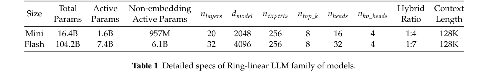
如图 2 所示，Ring-linear 由 \(N\) 个层组组成，每个层组包含 \(M\) 个线性 attention 模块和一个 Grouped Query Attention（GQA）模块。在 Ling Scaling Laws（Tian et al., 2025a）的原则指导下，Ring-linear 采用激活比例为 1/32 的 MoE 架构，并围绕多种设计选择进行了系统优化，包括专家粒度、共享专家比例、attention 平衡、与 sigmoid 路由策略结合的无辅助损失方法（Wang et al., 2024）、Multi-Token Prediction（MTP）层、QK-Norm、Partial-RoPE 及其他先进技术。这些创新使低激活 MoE 模型相较对应稠密模型实现最高七倍的效率提升。具体而言，模型第一个模块中的 MLP 层使用稠密 MLP，而非基于 MoE 的 MLP。
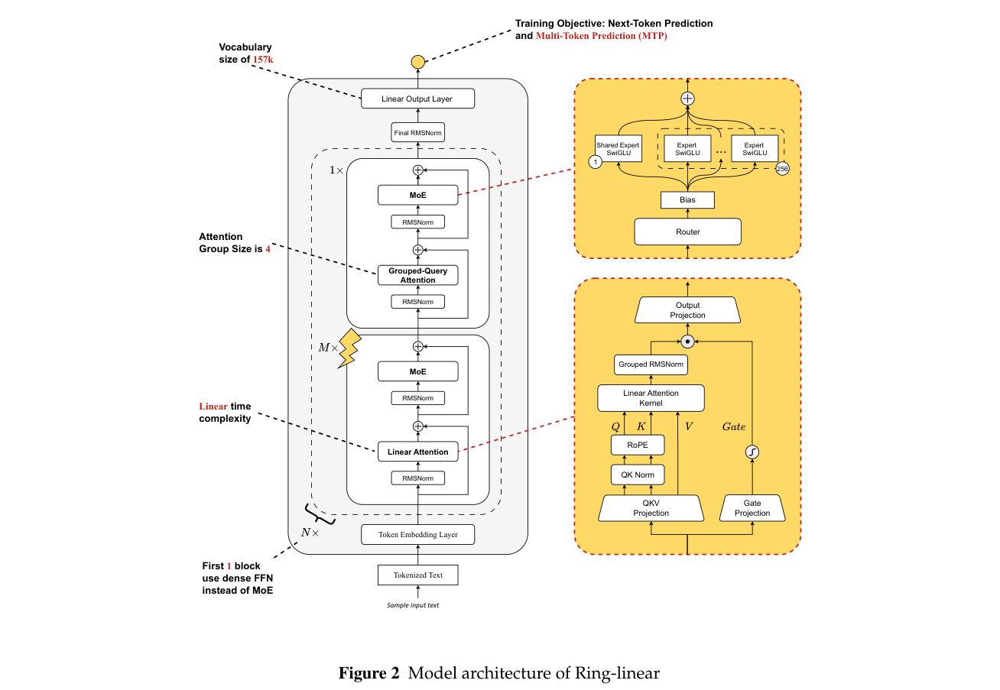
目前，基于 Ring-linear 架构的两款模型已经开源：Ring-mini-linear-2.0，总参数为 160 亿、激活参数为 16 亿（不含 embedding 参数时为 957M）；以及 Ring-flash-linear-2.0，总参数为 1040 亿、激活参数为 74 亿（不含 embedding 参数时为 6.1B）。两款模型的详细架构设置见表 1。
虽然 softmax attention 已在各种 LLM 中广泛采用，但其计算复杂度随序列长度呈二次增长，并且需要存储随序列长度线性增长的 KV cache。这些局限阻碍训练和推理效率，尤其是在 test-time scaling 与长上下文检索任务等长文本场景中。
我们发现，线性 attention 只需常数大小的 KV cache 存储，计算成本随序列长度线性增长，因此可以成为 softmax attention 的可行替代方案，而且效率显著更高。在 Ring-Linear-2.0 中，我们采用带固定衰减的线性 attention 机制（Sun et al., 2023; Qin et al., 2023），作为线性（接下页）
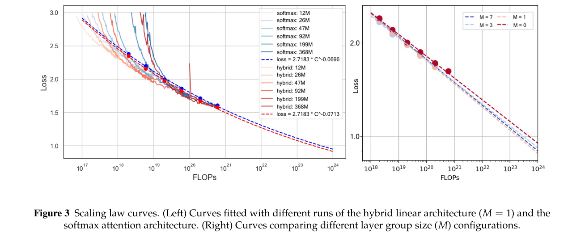
（续上页）attention 的基础实现。其机制可表示如下：
其中，\(\mathbf{O},\mathbf{Q},\mathbf{K},\mathbf{V}\in\mathbb{R}^{n\times d}\) 分别是输出、查询、键和值矩阵，\(n\) 表示序列长度，\(d\) 表示特征维度。这种线性形式有助于以 \(O(nd^2)\) 的良好复杂度进行递归预测。
在 Lightning Attention 的前向传播期间，第 \(t\) 个 token 的输出可表示为
将上式写成递归形式，可得
其中
式（4）定义的矩阵 \(\mathbf{kv}_t\in\mathbb{R}^{d\times d}\) 充当 Lightning Attention 的 KV cache。与 softmax attention 的 KV cache 线性增长不同，它在整个生成过程中只需要常数大小的存储空间。
尽管线性 attention 在大多数下游任务上达到可与 softmax attention 相当的性能，但在检索上表现不足。相比之下，混合线性 attention 架构的检索和外推能力不仅能匹配、甚至超过纯 softmax attention 架构（Li et al., 2025）。
我们将模型层均匀划分为若干组，每组的层组大小为 \(M+1\) 层。每个层组中，一个 softmax attention 层位于 \(M\) 个线性 attention 层之后。当 \(M=0\) 时，架构退化为纯 softmax attention 架构。
为比较混合线性 attention 架构与 softmax attention 架构，我们针对不同层组大小配置拟合 scaling law 曲线。遵循 Chinchilla 的方法（Hoffmann et al., 2022），我们建立训练 FLOP 预算与训练损失之间的幂律关系。得到的 scaling law 曲线如图 3 所示。可以看到，混合线性架构始终优于纯 softmax attention 架构。此外，较大的层组大小（如 \(M=7\)）在高 FLOP 预算下表现良好。因此，为兼顾效率与效果，我们分别将 Ring-flash-linear-2.0 和 Ring-mini-linear-2.0 的层组大小设为 8（\(M=7\)）和 5（\(M=4\)）。
如前所述，我们针对线性 attention 模块内部的具体实现细节开展大量消融实验，以确定最优架构设计。我们的设计原则是在确保分布式训练和 decoding 高效的同时，获得最佳模型性能。下面介绍所探索的一些关键架构设计选择。
Grouped RMSNorm。张量并行规模大于 1 时，线性 attention kernel 与输出投影之间的标准 RMSNorm 层需要 all-reduce 操作。为避免这些操作，我们采用分组归一化策略，在每个 rank 内部局部执行 RMSNorm，从而消除前向和反向传播中的通信。
旋转位置 embedding（RoPE）。如图 2 右侧所示，在线性 attention 模块中对 \(Q\) 和 \(K\) 输入执行归一化后，我们应用 RoPE 操作（仅作用于一半维度）。实验表明，引入 RoPE 使训练语言模型（LM）损失下降约 0.004。
逐 head 衰减。实验发现，混合线性模型的性能对线性 attention 机制中隐藏状态的衰减系数特别敏感。在 Lightning Attention 设置下，逐 head 衰减使用幂律衰减率而非线性衰减率，可使训练 LM 损失下降约 0.04。这一改进也显著影响下游任务性能。
在实际 LLM 应用和强化学习（RL）训练中，decoding 效率往往是模型 test-time scaling 的关键瓶颈。LLM decoding 期间，GPU 等加速器有限的内存带宽，使 attention 机制访问的 KV cache 大小成为影响 decoding 速度的关键因素。GQA（Ainslie et al., 2023）和 MLA（Liu et al., 2024a）等现有方法也旨在通过优化 KV cache 内存访问来提高 decoding 效率。图 4 展示我们提出的架构中，KV cache／状态内存访问量如何随序列长度变化，并与其他相关方法比较。
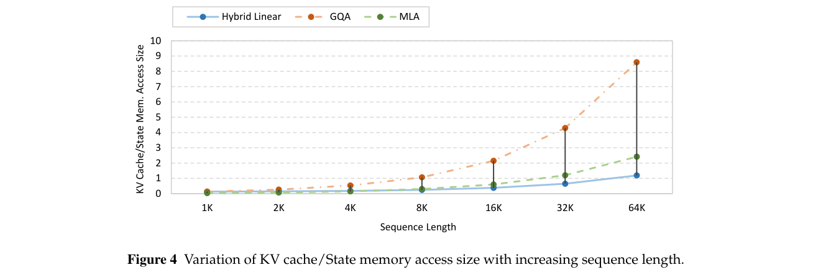
为充分展现混合线性模型的计算效率优势，我们从训练和推理两个方面开展全面性能优化。这些优化的核心在于 kernel 融合与优化。此外，在训练方面，我们进一步实现 kernel 融合，并引入针对 FP8 混合精度训练的更细粒度重计算策略，显著提高训练效率。在推理方面，我们引入专门适配混合线性模型的 speculative decoding，有效降低低并发场景中的响应延迟。整体优化架构如图 5 所示。
我们针对训练和推理开展大量 kernel 融合与优化。Kernel 融合不仅降低计算延迟，也减少训练期间的激活内存消耗。更低的内存占用支持更大的 micro-batch。在实验中，我们观察到，在 MoE 训练中将 micro-batch 大小从 1 增至 2，或从 2 增至 4，可使训练效率提高超过 20%。下面简要介绍若干关键 kernel；完整实现细节请参阅开源代码仓库6,7。
Linear Gate：在线性 attention 层中，我们将与门控机制相关的操作——如 attention 输出转置、分组 RMS norm、gate sigmoid 和乘法——融合到单一 kernel。这减少了对 GPU 内存的多次访问，并降低训练期间的激活内存消耗。
Permute／Unpermute：Megatron 将 padding／unpadding 与 permute／unpermute 分别执行；与之相比，我们采用更高效的策略，直接修改路由映射，从而将 padding／unpadding 整合进 permute／unpermute 操作。此外，在极端情况下（例如分配到某个 GPU 的 token 数少于 padding 大小），该方法也不会产生额外开销。
QK Norm + Partial RoPE：Ring 模型包含 QK normalization 和 partial RoPE 等操作。我们将 QK normalization 与其前面的 split、RoPE 和 transpose 操作融合。
6 linghe：https://github.com/inclusionAI/linghe
7 flood：https://github.com/alipay/PainlessInferenceAcceleration/tree/main/flood
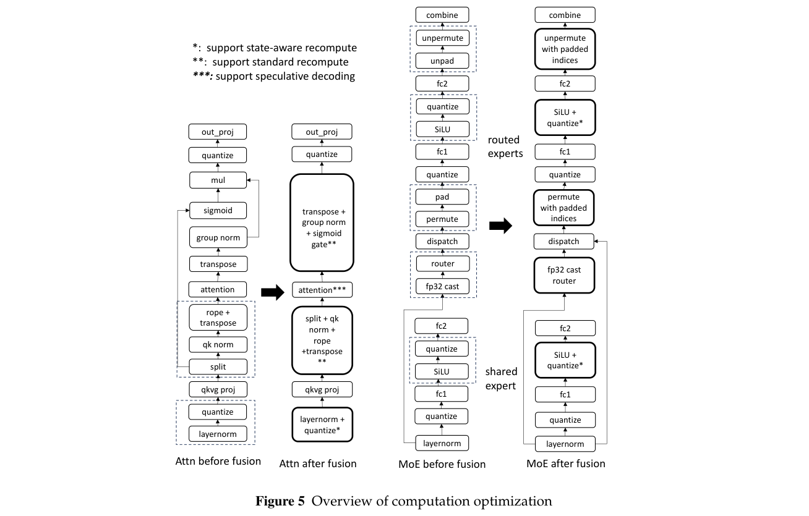
MoE Router：基线方法在计算 router 之前，需要将隐藏状态转换为 FP32，显著增加 I/O 和激活内存。我们则在融合 kernel 内完成类型转换和计算，输出采用 FP32（前向）或 BF16（反向）。
线性 attention：现有线性 attention 实现（例如 fla.chunk_simple_gla_fwd8）在 prefill 阶段使用 2–4 个 kernel，导致较高的 kernel 启动开销和内存流量。为解决这一问题，我们使用分区的 \(Q/K\) 和 \(V\)，重新设计分区策略，在不牺牲并行性的前提下提升性能。这样只需使用一个 Triton kernel（如果将 \(Q/K\) 分开，则可选地增加一个 kernel）。
其他 kernel 融合：我们还根据 Ring 模型的规模和并行化策略进一步优化 kernel。例如，由于训练期间不使用张量并行，我们无需考虑分布式损失计算，就能开发更高效的交叉熵损失 kernel。我们还优化了零值计数和 gradient norm 计算等操作的 batch 计算，取得显著性能提升。
相较 BF16 GEMM，FP8 GEMM 的计算速度显著提高。然而，将 BF16 输入转换为 FP8 会引入量化开销，成为瓶颈，尤其在 H800 等高性能 GPU 上，量化可能占据 GEMM 时间的近 20%。因此，将量化与相邻 kernel 融合，成为降低总体延迟的关键策略。
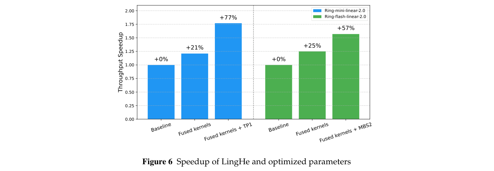
量化融合：量化层通常位于激活层或归一化层之后。例如，SiLU 后紧接 Linear 层。我们修改 SiLU kernel，使其直接输出量化张量，消除写入和读取 SiLU 的 BF16 输出的需要。假设输入形状为 \([M,N]\)，非融合版本的 I/O 量约为 \(8MN\)，融合版本则将其减少至 \(4MN\)。这使受 I/O 限制的 kernel 显著加速。同样，在反向传播中，我们优化 SiLU 反向等操作，使其直接输出量化后的 \(dy\) 和 \(dy^{\mathsf T}\)，将 kernel 时间缩短近一半。
状态感知重计算：我们进一步优化细粒度重计算。前向传播需要量化后的 \(x\) 来计算 \(y=xw\)。然而，反向传播需要转置后量化的 \(x^{\mathsf T}\)，来计算 \(dw=x^{\mathsf T}y\)。因此，重计算中的前向传播可以采用不同于常规前向传播的计算和量化逻辑。基于这一认识，我们将前向传播设计为：非重计算时仅计算并输出量化后的 \(x\)，重计算时仅计算并输出量化后的 \(x^{\mathsf T}\)，从而减少冗余计算。
我们评估采用优化后的 kernel 和参数时的训练效率，如图 6 所示。对于 Ring-mini-linear-2.0，FP8 分块实现的基线配置采用全局 batch 大小（GBS）4416、micro-batch 大小（MBS）4、张量并行（TP）2，以及 32 张 H800 GPU。使用融合 kernel 的优化版本采用 GBS=4352、MBS=4、TP=1（GBS 略小，是因为使用 32 张 GPU 且 MBS=4 时无法达到 4416）。得益于节省内存的融合 kernel 与更激进的重计算，我们能在 TP=1 时支持 MBS=4，相较基线使训练吞吐量提高 77%。
对于 Ring-flash-linear-2.0，基线配置使用 GBS=8352、MBS=1、流水线并行（PP）=6、虚拟流水线并行（VPP）=2，以及 288 张 H800 GPU。采用融合 kernel 的优化版本相较基线将训练吞吐量提高 25%。利用节省的内存，我们将 micro-batch 大小从 1 增至 2，并将流水线配置从 PP=6/VPP=2 调整为 PP=8/VPP=1，最终使整体吞吐量提高 57%。
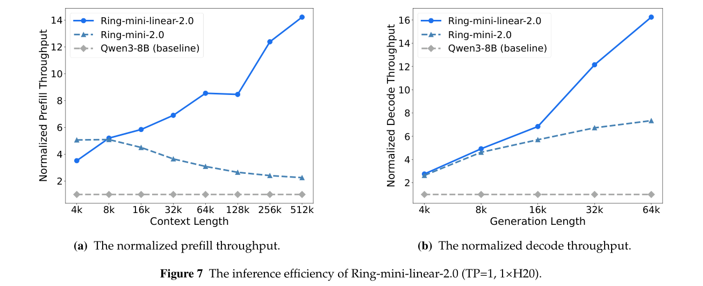
虽然线性 attention 理论上计算效率更高，但实际实现一直受限于缺少对 SGLang 和 vLLM V1 框架等先进推理方案的支持。此外，decoding kernel 往往分散为多个操作，进一步削弱整体效率。为克服这些局限，我们开发一组优化后的融合线性 attention kernel，并将其集成到 SGLang 和 vLLM，供 Ring-linear 模型使用。这些改进不仅支持更广泛的推理模式，也显著提高系统吞吐量。
我们使用 SGLang 框架，通过测量 prefill 和 decoding 吞吐量，对未使用 MTP 的 Ring-linear 模型进行全面推理效率评估。Prefill 吞吐量指 batch 大小为 1 时每秒处理的输入 token 数；decoding 吞吐量指 batch 大小为 64 时每秒生成的输出 token 数。为便于跨模型比较，我们报告相对于基线模型归一化的吞吐量。Ring-mini-linear-2.0 和 Ring-flash-linear-2.0 的推理性能分别见图 7 和图 8。为在图中全面展示 Ring-linear 模型的推理效率，我们将其与对应稠密模型 Qwen3-8B、Qwen3-32B（Yang et al., 2025），以及使用 softmax attention 的对应 Ring-2.0 系列模型 Ring-mini-2.09 和 Ring-flash-2.010 比较。具体而言，对于 Ring-flash-linear-2.0，我们还与同样使用混合线性 attention 架构的 Qwen3-Next-80BA3B 进行深入比较。
在 prefill 阶段，上下文长度超过 8K 后，Ring-linear 开始优于 Ring-2.0，随后吞吐量快速增长。最终，在上下文长度超过 128K 时，其吞吐量达到 Ring-2.0 的 2.5 倍以上、基线模型的 8 倍以上。在 decoding 阶段，Ring-linear 模型保持强劲性能，生成长度超过 4K 后便超越 Ring-2.0。在 64K 上下文长度时，其吞吐量超过 Ring-2.0 的两倍、基线模型的十倍以上。
此外，大语言模型可以通过 speculative decoding，加速小 batch 请求的推（接下页）
9 https://huggingface.co/inclusionAI/Ring-mini-2.0
10 https://huggingface.co/inclusionAI/Ring-flash-2.0
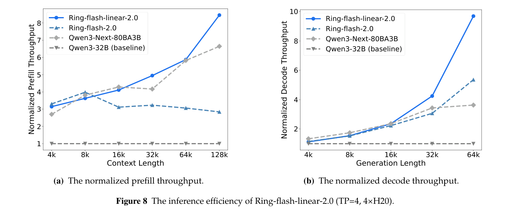
（续上页）理。然而，社区现有的线性 attention kernel 不支持自定义 attention mask，因此无法实现基于树的 speculative decoding。我们开发了首个支持树形 mask 的线性 attention kernel，并与兼容树形 mask 的 attention kernel 配合，为 Ring 混合线性模型实现 speculative decoding。该功能已在离线推理框架 Flood 中提供，我们正将该 kernel 移植至 SGLang，并与之前的工作 lookahead（Zhao et al., 2024）集成。
为降低训练成本，Ring-mini-linear-2.0 和 Ring-flash-linear-2.0 的基座模型分别从 Ling-mini-base-2.0-20T11 和 Ling-flash-base-2.0-20T12 初始化。具体而言，每个线性 attention 层中的 QKV 投影，通过沿 head 维度扩展参数转换为 MHA；gate 投影和 RMSNorm 引入的额外参数则随机初始化。从上述两个初始化模型出发，我们采用两阶段持续预训练策略，恢复原始基座模型的能力。
持续训练阶段。该阶段从 Ling-base-2.0-20T 模型使用的同一语料中采样数据，并以 4K 上下文长度训练，以恢复基座模型能力。在这一阶段，Ring-mini-linear-base-2.0 使用 600B token 训练，Ring-flash-linear-base-2.0 使用 1T token 训练。
中间训练阶段。该阶段采用与 Ling-mini-base-2.0 和 Ling-flash-base-2.0 相同的策略。为后续后训练做准备，我们将模型上下文窗口从 4K 逐步扩展至 32K，最终扩展至 128K，同时相应提高高质量推理数据的比例。
在上述训练过程中，我们复用 Ling-base-2.0 的关键超参数，并将标准 Warmup-Stable-Decay（WSD）学习率调度器（Hu et al., 2024b）替换（接下页）
11 https://huggingface.co/inclusionAI/Ling-mini-base-2.0-20T
12 https://huggingface.co/inclusionAI/Ling-flash-base-2.0
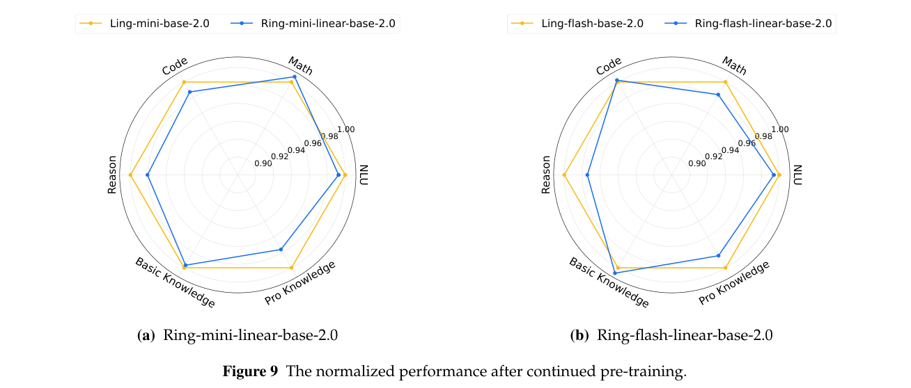
（续上页）为 Warmup-Stable-Merge（WSM）调度器（Tian et al., 2025b）。通过合并中间训练 checkpoint 来模拟学习率衰减策略，得到的 Ring-linear-base-2.0 模型在各项基准上，与使用 20T token 训练的 Ling-base-2.0 模型表现相当。图 9 展示 Ring-linear-base-2.0 在代码、数学、推理、知识和自然语言理解（NLU）等不同能力上的性能。归一化性能指 Ring-linear-base-2.0 相对于 Ling-base-2.0 的归一化分数。如图所示，在多数类别上，Ring-linear-base-2.0 恢复了原始模型超过 98% 的性能。然而，模型在推理和专业知识任务上仍略有不足，这可能归因于持续预训练过程中的知识遗忘问题（Ibrahim et al., 2024）。
持续预训练之后，我们通过后训练阶段进一步增强模型能力，该阶段主要包含有监督微调（SFT）和 RL 两个阶段。我们已识别 RL 中普遍存在的训练崩溃问题的根本原因：训练—推理差异。通过实现系统性的训练与推理对齐，我们实现了长期稳定的 RL 训练。
Ring-linear 的 SFT 数据更加重视全面、均衡的推理能力与泛化能力。除了数学、代码、科学和逻辑等领域的高难度 SFT 数据，数据集还纳入覆盖知识、agent 任务、主观创作和医疗领域的通用 SFT 数据。我们重新合成了函数调用 SFT 数据，使其更好地符合更通用的函数调用模式。因此，Ring-linear 系列作为面向推理的模型，不仅在推理任务中表现出色，也能在多个领域的非推理任务上给出令人满意的回答。
所有 SFT 数据均经过更严格的去噪与去毒处理，包括 n-gram 过滤和语义相似度检测，以确保模型安全性以及其能力的（接下页）
（续上页）真实性。延续上一阶段，SFT 训练采用 128K 上下文窗口。为防止 SFT 阶段过拟合，并为后续 RL 留出充足空间，我们选择较早 epoch 的一个 checkpoint（而非基准分数最高的那个），用于下游 RL 阶段。
在 SFT 基础上，我们随后在数学、代码、科学、逻辑和主观任务等多个领域开展 RL。所有样本均经过细致筛选，从中选择难度适中的样本用于 RL 训练。该阶段使用足够长的上下文窗口（如 64K），在性能与效率之间取得最优平衡。我们观察到，面对高难度训练数据，较小窗口（如 32K）会带来潜在限制，即较高截断率和较低性能上限。相反，采用足够长的上下文窗口训练是更好的选择，截断率可以忽略，并使模型达到更高的性能上限。
与预训练和 SFT 不同，大语言模型的 RL 同时依赖训练和推理。我们观察到，即使 RMSNorm 和 RoPE 等标准组件，在常用训练框架（如 Megatron、FSDP）与推理框架（如 vLLM、SGLang）之间，也存在不可忽略的实现差异。这些差异逐层累积和放大，导致训练和推理（rollout）结果之间出现显著差别。在极端情况下，同一个 token 的输出概率可能在训练时为 0、推理时为 1。这种训练—推理差异破坏了 on-policy 的理论假设，进而导致 RL 训练不稳定并限制性能。
此外，两个普遍因素显著加剧这种训练—推理差异：
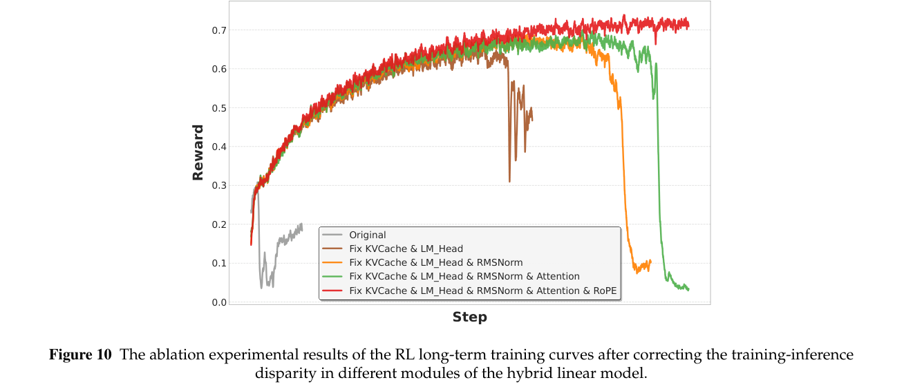
因此，长输出 MoE 模型与短输出稠密模型给 RL 带来的挑战在本质上不同。我们经常观察到，对后者有效的算法未必适用于前者，反之亦然。
虽然近期一些研究已开始关注这一问题（Zheng et al., 2025; Yao et al., 2025），但多数工作集中在算法层面的缓解措施。我们的工作不仅从算法角度提高 RL 稳定性，也投入大量精力，系统性地解决训练—推理差异，力求从根本上解决问题。如图 10 所示，每一个经过对齐的模块都有助于提高 RL 的训练效率和稳定性。
为对齐训练和推理，必须向训练框架和推理框架提供相同输入，并逐模块、逐层比较激活值。应从前到后系统识别并解决每个激活值的差异。整体对齐流程可分为三个阶段：
为确保训练和推理一致，我们的工作主要集中在三个方面：确保相同实现、保持合适精度，以及消除非确定性。鉴于完整对齐流程较为复杂，下文着重介绍关键模块中尤其容易产生训练—推理差异的具体问题。
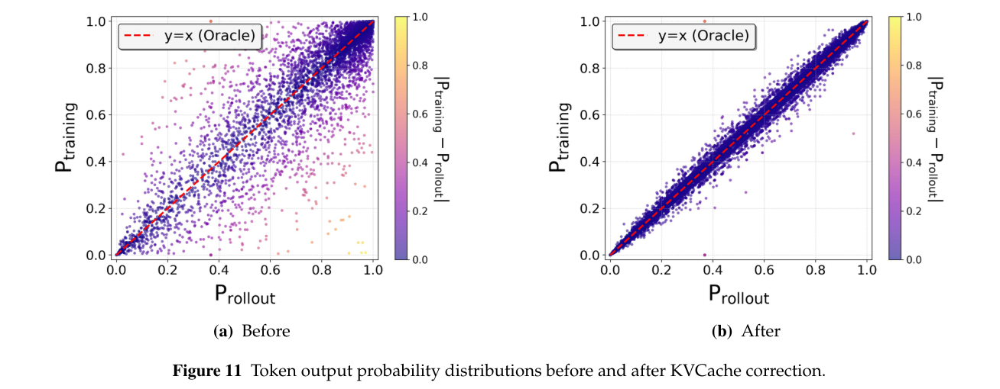
KV cache。在混合线性模型中，线性 attention 的 KV 状态需要累加（式 4），因此需要更高数值精度（如 FP32）。如果推理引擎将 KV cache 初始化为 BF16，误差会在递归过程中逐步累积，导致显著的精度偏差，如图 11 所示。
LM Head。Softmax 函数对数值精度高度敏感，因此 lm_head 层需要采用 FP32。然而，在训练引擎中直接将 lm_head 配置为 FP32，会引入大量计算和内存开销。为此，我们实现了自定义 GEMM 算子，接收 BF16 输入，并在寄存器内部执行类型转换与计算。这一方法在保持足够精度的同时，显著降低计算和内存成本。
RMSNorm。需要注意以下几点：计算过程应使用 FP32；epsilon 值必须一致；残差计算保持 FP32，并在训练和推理中都取消 RMSNorm 与残差的融合。
RoPE。应仔细检查训练和推理之间细微的实现差别。例如，常见 PyTorch 实现与推理引擎 RoPE 算子之间往往存在小差异，即使输入完全相同，也可能产生略有不同的输出。
Attention。首先，训练和推理使用的后端必须一致，例如 FlashAttention（Dao et al., 2022）。其次，注意 prefill（训练时使用）与 decoding（推理时使用）之间的不对齐。这会使训练—推理差异随输出长度增加而恶化，使 RL 训练更容易崩溃。
MoE。除了保持 router 计算的高精度，还必须将非稳定的 torch.topk 函数替换为稳定实现。此外，token 置换和求和必须采用确定性顺序，以避免差异；训练和推理所用 MoE 算子也必须一致。
当系统层面实现训练—推理对齐后，我们观察到，无需额外修改算法。
上面的式（5）表示理想 PPO 优化方法，使用真实 rollout 采样分布进行重要性采样加权。然而，由于训练—推理差异，rollout 概率往往与训练概率显著不同，不适合用于重要性采样。大多数 RL 框架，例如 verl（Sheng et al., 2024）和 OpenRLHF（Hu et al., 2024a），选择将 rollout 数据在训练引擎中重新前向传播，重新计算训练概率，从而得到下列式（6）。
然而，式（6）存在偏差，因为它完全忽略训练—推理差异。因此，最可靠的方向是在系统性纠正训练—推理差异之后，如式（5）那样直接使用 rollout 概率。
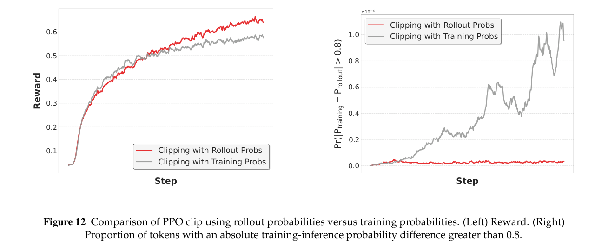
系统性实现训练—推理对齐之后，相较重新计算训练概率，使用 rollout 概率可在训练后期获得更高奖励，并将训练—推理差异保持在更稳定的范围内（如图 12 所示）。换言之，在训练—推理对齐的前提下，直接使用 rollout 概率不仅节省重新计算训练概率的时间，也进一步增强 RL 训练效率和稳定性。
基于上述改进，在整个 RL 过程中，模型的训练奖励和测试分数均持续增长，如图 13 所示。
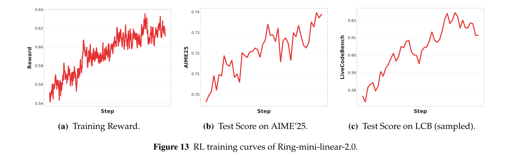
我们对 Ring-linear 系列模型开展全面评估，着重考察多个维度的推理能力。
评估采用涵盖多个推理维度的 17 个基准：
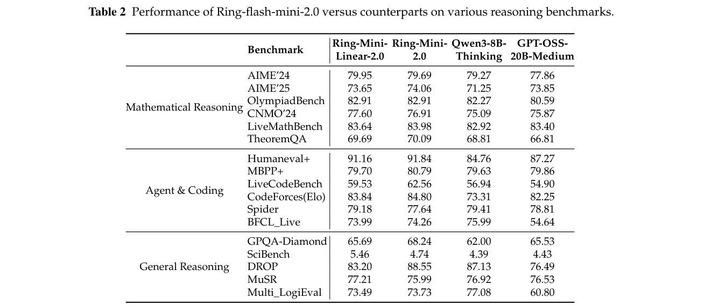
我们将 Ring-linear 系列模型与参数规模相近的最先进模型比较。具体而言，Ring-mini-linear-2.0 与 Ring-mini-2.013、Qwen3-8B-thinking（Yang et al., 2025）和 GPT-OSS-20B-Medium（Agarwal et al., 2025）比较。对于 Ring-flash-linear-2.0，比较对象包括 Ring-Flash-2.014、Qwen3-32B-Thinking（Yang et al., 2025）、Gemini-2.5-Flash（Comanici et al., 2025）、GPT-OSS-120B-Medium（Agarwal et al., 2025）、Seed-OSS-36B-Instruct15 和 Qwen3-Next-80BA3B-Thinking16。
Ring-mini-linear-2.0 及比较方法的性能结果汇总于表 2。表中可以清楚看出，尽管 Ring-mini-linear-2.0 的激活参数仅有 1.6B，规模紧凑，但在各类推理任务上，性能可与对应模型相媲美。
表 3 汇总 Ring-flash-linear-2.0 与若干主要比较模型的基准结果。结果表明，尽管设计紧凑，Ring-flash-linear-2.0 仍能在多样化的推理维度上，取得与这些比较模型高度相当的性能，展现了模型全面而稳健的推理能力。
13 https://huggingface.co/inclusionAI/Ring-mini-2.0
14 https://huggingface.co/inclusionAI/Ring-flash-2.0
15 https://huggingface.co/ByteDance-Seed/Seed-OSS-36B-Instruct
16 https://huggingface.co/Qwen/Qwen3-Next-80B-A3B-Thinking
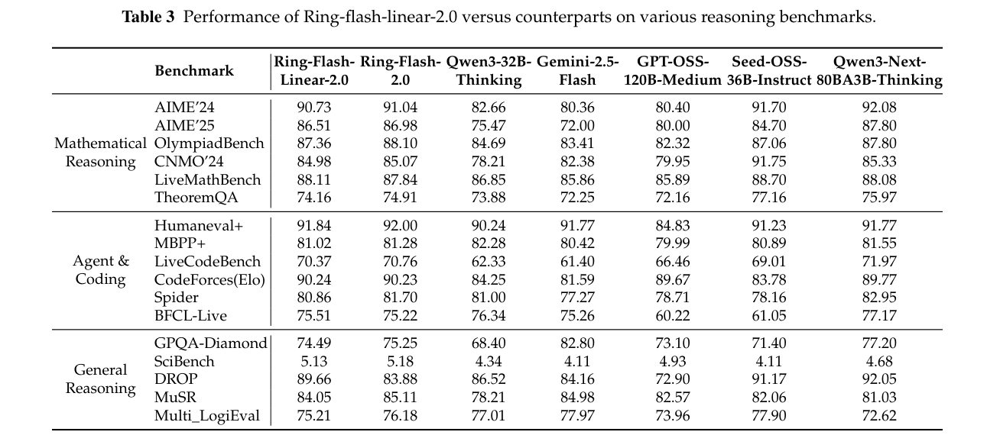
本技术报告介绍基于 Ring-linear 混合架构的模型，具体为 Ring-mini-linear-2.0 和 Ring-flash-linear-2.0。通过将线性 attention 机制与高性能 FP8 融合 kernel LingHe 结合，我们显著提高了模型的训练和推理效率。此外，充分对齐的 RL 系统带来更稳定的训练，进一步抬高模型性能上限。不过，我们也认识到当前模型存在一些局限。例如，为保持模型效果，线性 attention 模块为 \(Q\)、\(K\)、\(V\) 保持相同的 attention head 数，带来较高内存开销。此外，剩余 softmax attention 模块引入额外计算瓶颈，影响混合架构的整体效率。今后，我们将继续探索更高效的模型架构，以更好地兼顾性能与效率。
Sandhini Agarwal, Lama Ahmad, Jason Ai, Sam Altman, Andy Applebaum, Edwin Arbus, Rahul K Arora, Yu Bai, Bowen Baker, Haiming Bao, et al. gpt-oss-120b 与 gpt-oss-20b 模型卡。 arXiv preprint arXiv:2508.10925, 2025.
Joshua Ainslie, James Lee-Thorp, Michiel De Jong, Yury Zemlyanskiy, Federico Lebrón, and Sumit Sanghai. GQA：从多头 checkpoint 训练广义多查询 transformer 模型。 arXiv preprint arXiv:2305.13245, 2023.
Aili Chen, Aonian Li, Bangwei Gong, Binyang Jiang, Bo Fei, Bo Yang, Boji Shan, Changqing Yu, Chao Wang, Cheng Zhu, et al. MiniMax-M1：利用 Lightning Attention 高效扩展测试时计算。 arXiv preprint arXiv:2506.13585, 2025.
Wenhu Chen, Ming Yin, Max Ku, Pan Lu, Yixin Wan, Xueguang Ma, Jianyu Xu, Xinyi Wang, and Tony Xia. TheoremQA：定理驱动的问答数据集。 arXiv preprint arXiv:2305.12524, 2023.
CMNO. 中国数学奥林匹克。 https://www.cms.org.cn/Home/comp/comp/cid/12.html, 2024.
Codeforces. Codeforces 竞技编程平台。 https://codeforces.com, 2024.
Gheorghe Comanici, Eric Bieber, Mike Schaekermann, Ice Pasupat, Noveen Sachdeva, Inderjit Dhillon, Marcel Blistein, Ori Ram, Dan Zhang, Evan Rosen, et al. Gemini 2.5：以前沿推理、多模态、长上下文和下一代 agent 能力推动边界。 arXiv preprint arXiv:2507.06261, 2025.
Tri Dao, Dan Fu, Stefano Ermon, Atri Rudra, and Christopher Ré. FlashAttention：具有 I/O 感知能力的快速、内存高效的精确 attention。 Advances in neural information processing systems, 35:16344–16359, 2022.
Dheeru Dua, Yizhong Wang, Pradeep Dasigi, Gabriel Stanovsky, Sameer Singh, and Matt Gardner. DROP：需要对段落进行离散推理的阅读理解基准。 arXiv preprint arXiv:1903.00161, 2019.
Albert Gu and Tri Dao. Mamba：使用选择性状态空间进行线性时间序列建模。 In First Conference on Language Modeling, 2024.
Daya Guo, Dejian Yang, Haowei Zhang, Junxiao Song, Ruoyu Zhang, Runxin Xu, Qihao Zhu, Shirong Ma, Peiyi Wang, Xiao Bi, et al. DeepSeek-R1：通过强化学习激发 LLM 的推理能力。 arXiv preprint arXiv:2501.12948, 2025.
Chaoqun He, Renjie Luo, Yuzhuo Bai, Shengding Hu, Zhen Leng Thai, Junhao Shen, Jinyi Hu, Xu Han, Yujie Huang, Yuxiang Zhang, et al. OlympiadBench：通过奥赛级双语多模态科学问题促进 AGI 的挑战性基准。 arXiv preprint arXiv:2402.14008, 2024.
Jordan Hoffmann, Sebastian Borgeaud, Arthur Mensch, Elena Buchatskaya, Trevor Cai, Eliza Rutherford, Diego de Las Casas, Lisa Anne Hendricks, Johannes Welbl, Aidan Clark, et al. 训练计算最优的大语言模型。 arXiv preprint arXiv:2203.15556, 2022.
Jian Hu, Xibin Wu, Zilin Zhu, Xianyu, Weixun Wang, Dehao Zhang, and Yu Cao. OpenRLHF：易用、可扩展的高性能 RLHF 框架。 arXiv preprint arXiv:2405.11143, 2024a.
Shengding Hu, Yuge Tu, Xu Han, Chaoqun He, Ganqu Cui, Xiang Long, Zhi Zheng, Yewei Fang, Yuxiang Huang, Weilin Zhao, Xinrong Zhang, Zheng Leng Thai, Kaihuo Zhang, Chongyi Wang, Yuan Yao, Chenyang Zhao, Jie Zhou, Jie Cai, Zhongwu Zhai, Ning Ding, Chao Jia, Guoyang Zeng, Dahai Li, Zhiyuan Liu, and Maosong Sun. MiniCPM：通过可扩展训练策略揭示小语言模型潜力，2024b。 https://arxiv.org/abs/2404.06395.
Adam Ibrahim, Benjamin Thérien, Kshitij Gupta, Mats L. Richter, Quentin Anthony, Timothée Lesort, Eugene Belilovsky, and Irina Rish. 持续预训练大语言模型的简单且可扩展策略，2024。 https://arxiv.org/abs/2403.08763.
Naman Jain, King Han, Alex Gu, Wen-Ding Li, Fanjia Yan, Tianjun Zhang, Sida Wang, Armando Solar-Lezama, Koushik Sen, and Ion Stoica. LiveCodeBench：面向代码的大语言模型全面无污染评估。 arXiv preprint arXiv:2403.07974, 2024.
Aonian Li, Bangwei Gong, Bo Yang, Boji Shan, Chang Liu, Cheng Zhu, Chunhao Zhang, Congchao Guo, Da Chen, Dong Li, et al. MiniMax-01：利用 Lightning Attention 扩展基础模型。 arXiv preprint arXiv:2501.08313, 2025.
Aixin Liu, Bei Feng, Bing Xue, Bingxuan Wang, Bochao Wu, Chengda Lu, Chenggang Zhao, Chengqi Deng, Chenyu Zhang, Chong Ruan, et al. DeepSeek-V3 技术报告。 arXiv preprint arXiv:2412.19437, 2024a.
Jiawei Liu, Songrun Xie, Junhao Wang, Yuxiang Wei, Yifeng Ding, and Lingming Zhang. 评估语言模型的高效代码生成能力。 In First Conference on Language Modeling, 2024b. https://openreview.net/forum?id=IBCBMeAhmC.
Junnan Liu, Hongwei Liu, Linchen Xiao, Ziyi Wang, Kuikun Liu, Songyang Gao, Wenwei Zhang, Songyang Zhang, and Kai Chen. 你的 LLM 能否稳定推理？ arXiv preprint arXiv:2412.13147, 2024c.
MAA. 2024 年美国数学邀请赛（AIME）。 https://maa.org/math-competitions/american-invitational-mathematics-examination-aime, 2024.
MAA. 2025 年美国数学邀请赛（AIME）。 https://maa.org/math-competitions/american-invitational-mathematics-examination-aime, 2025.
Niklas Muennighoff, Zitong Yang, Weijia Shi, Xiang Lisa Li, Li Fei-Fei, Hannaneh Hajishirzi, Luke Zettlemoyer, Percy Liang, Emmanuel Candès, and Tatsunori Hashimoto. s1：简单的 test-time scaling。 arXiv preprint arXiv:2501.19393, 2025.
Nisarg Patel, Mohith Kulkarni, Mihir Parmar, Aashna Budhiraja, Mutsumi Nakamura, Neeraj Varshney, and Chitta Baral. Multi-LogiEval：迈向大语言模型多步逻辑推理能力评估。 arXiv preprint arXiv:2406.17169, 2024.
Zhen Qin, Dong Li, Weigao Sun, Weixuan Sun, Xuyang Shen, Xiaodong Han, Yunshen Wei, Baohong Lv, Xiao Luo, Yu Qiao, et al. TransNormerLLM：通过改进 TransNormer 构建更快、更好的大语言模型。 arXiv preprint arXiv:2307.14995, 2023.
David Rein, Betty Li Hou, Asa Cooper Stickland, Jackson Petty, Richard Yuanzhe Pang, Julien Dirani, Julian Michael, and Samuel R Bowman. GPQA：研究生级、无法通过 Google 搜索轻松解答的问答基准。 In First Conference on Language Modeling, 2024.
Noam Shazeer, Azalia Mirhoseini, Krzysztof Maziarz, Andy Davis, Quoc Le, Geoffrey Hinton, and Jeff Dean. 极大规模神经网络：稀疏门控 MoE 层。 arXiv preprint arXiv:1701.06538, 2017.
Guangming Sheng, Chi Zhang, Zilingfeng Ye, Xibin Wu, Wang Zhang, Ru Zhang, Yanghua Peng, Haibin Lin, and Chuan Wu. HybridFlow：灵活高效的 RLHF 框架。 arXiv preprint arXiv: 2409.19256, 2024.
Charlie Snell, Jaehoon Lee, Kelvin Xu, and Aviral Kumar. 最优扩展 LLM 测试时计算，可能比扩展模型参数更有效。 arXiv preprint arXiv:2408.03314, 2024.
Zayne Sprague, Xi Ye, Kaj Bostrom, Swarat Chaudhuri, and Greg Durrett. MuSR：通过多步软推理检验 chain-of-thought 的极限。 arXiv preprint arXiv:2310.16049, 2023.
Yutao Sun, Li Dong, Shaohan Huang, Shuming Ma, Yuqing Xia, Jilong Xue, Jianyong Wang, and Furu Wei. Retentive Network：面向大语言模型的 transformer 继任者。 arXiv preprint arXiv:2307.08621, 2023.
Changxin Tian, Kunlong Chen, Jia Liu, Ziqi Liu, Zhiqiang Zhang, and Jun Zhou. 迈向更大杠杆效应：高效 MoE 语言模型的 scaling laws。 2025a. https://arxiv.org/abs/2507.17702.
Changxin Tian, Jiapeng Wang, Qian Zhao, Kunlong Chen, Jia Liu, Ziqi Liu, Jiaxin Mao, Wayne Xin Zhao, Zhiqiang Zhang, and Jun Zhou. WSM：通过 checkpoint 合并实现 LLM 预训练的无衰减学习率调度，2025b。 https://arxiv.org/abs/2507.17634.
Ashish Vaswani, Noam Shazeer, Niki Parmar, Jakob Uszkoreit, Llion Jones, Aidan N Gomez, Łukasz Kaiser, and Illia Polosukhin. Attention 即你所需的一切。 Advances in neural information processing systems, 30, 2017.
Lean Wang, Huazuo Gao, Chenggang Zhao, Xu Sun, and Damai Dai. MoE 的无辅助损失负载均衡策略。 arXiv preprint arXiv:2408.15664, 2024.
Xiaoxuan Wang, Ziniu Hu, Pan Lu, Yanqiao Zhu, Jieyu Zhang, Satyen Subramaniam, Arjun R Loomba, Shichang Zhang, Yizhou Sun, and Wei Wang. SciBench：评估大语言模型的大学级科学问题求解能力。 arXiv preprint arXiv:2307.10635, 2023.
Fanjia Yan, Huanzhi Mao, Charlie Cheng-Jie Ji, Tianjun Zhang, Shishir G Patil, Ion Stoica, and Joseph E Gonzalez. Berkeley 函数调用排行榜，2024。
An Yang, Anfeng Li, Baosong Yang, Beichen Zhang, Binyuan Hui, Bo Zheng, Bowen Yu, Chang Gao, Chengen Huang, Chenxu Lv, et al. Qwen3 技术报告。 arXiv preprint arXiv:2505.09388, 2025.
Songlin Yang, Bailin Wang, Yikang Shen, Rameswar Panda, and Yoon Kim. 具有硬件高效训练能力的 Gated Linear Attention transformer。 arXiv preprint arXiv:2312.06635, 2023.
Songlin Yang, Bailin Wang, Yu Zhang, Yikang Shen, and Yoon Kim. 利用 delta rule 沿序列长度并行化线性 transformer。 Advances in neural information processing systems, 37:115491–115522, 2024.
Feng Yao, Liyuan Liu, Dinghuai Zhang, Chengyu Dong, Jingbo Shang, and Jianfeng Gao. 你的高效 RL 框架暗中带来了 off-policy RL 训练，2025。 https://fengyao.notion.site/off-policy-rl.
Tao Yu, Rui Zhang, Kai Yang, Michihiro Yasunaga, Dongxu Wang, Zifan Li, James Ma, Irene Li, Qingning Yao, Shanelle Roman, et al. Spider：面向复杂跨领域语义解析与 text-to-SQL 任务的大规模人工标注数据集。 arXiv preprint arXiv:1809.08887, 2018.
Yao Zhao, Zhitian Xie, Chen Liang, Chenyi Zhuang, and Jinjie Gu. Lookahead：保持生成准确性无损的大语言模型推理加速框架，2024。 https://arxiv.org/abs/2312.12728.
Chujie Zheng, Shixuan Liu, Mingze Li, Xiong-Hui Chen, Bowen Yu, Chang Gao, Kai Dang, Yuqiong Liu, Rui Men, An Yang, Jingren Zhou, and Junyang Lin. 群组序列策略优化。 2025. https://arxiv.org/abs/2507.18071.